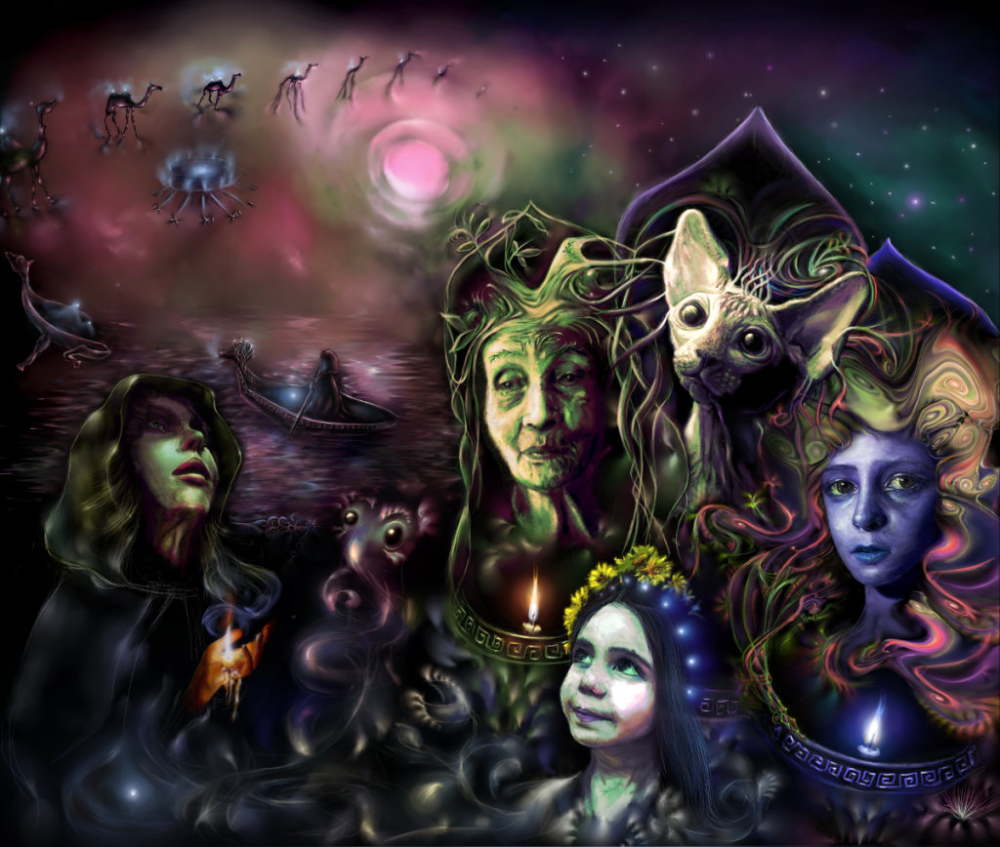
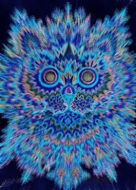

23 Сон про Дерево Жизни

Вот она - ты пришел в ту точку, где все замирает на век. Чернота. Гигантские звезды.
- Я умерла? - спрашиваю, в оцепенении
Мне отвечает добрый вкрадчивый голос:
- Да, что же поделать. Правда, это произошло уже давным давно, и сейчас ты об этом вспомнила
Вокруг шепот множества голосов - старческих, детских, знакомых, забытых, смеющихся, грустных, льющихся, словно река, читающих сказки-заклинания. И в один миг они замирают и вокруг прокатывается волна шепота - "свет, свет, свят, светоч...".
Мне удалось вернуться туда, куда при жизни не возвращаются - внутрь Дерева Жизни. Люди как бы на нем - родинки, как плодовые тела грибов на грибнице. Гриб, плодовое тело, рождается, умирает, а грибница бессмертна, она живет циклами жизнесмерти.
Для Дерева времени в привычном смысле не существует. Время существует только в человеческой жизни. Дерево бессмертно. Его время - это пространство, по которому я перемещалась вперед и назад, и даже, кажется, в разные стороны. Из этого вытекают абсолютно обескураживающие следствия. Причинно-следственный закон на уровне дерева работает иначе. Например, событие произошедшее в настоящем, может повлечь изменение в прошлом. При этом на самом деле все давным давно уже свершилось, хотя все, что свершилось, можно изменить. Все жизни прожиты, но при этом прошлое можно переписать и заменить прожитые куски. Да, это не укладывается в голове, это можно было понять только слившись с деревом и оставив человеческую логику. Где-то возникает ошибка, неправильно растущая ветвь, больная, и от этой ошибки могут идти не только ретроспективы, но и "флешфорварды".
В результате некоторых событий на моей ветви образовался порез - родник, как было сказано - светоч. Через него выходила сущность Дерева Жизни и в решающие моменты брала все на себя, роль судьи. Светоч - это не дар судьбы, хотя его можно так расценивать. Это порез на теле дерева, это кровь из раны. Это то, что позволяет еще при жизни общаться с деревом Жизни. Тот, у кого открыт родник, может переходить в вечность дерева и обратно, может ходить по линиям предков и видеть "иные" вещи.
Резкий крик птицы прервал застывшую вечность, на поляну выскочил шаман. С каждым ударом в бубен я чувствовала, как мир наполняется жизнью, затем я ощутила, что это стук моего собственного сердца. На поляне появились другие в ярких костюмах, все выкрикивали магические слова песни жизни и кружились. Все вокруг закружилось с бешеной скоростью, я возвращалась...
Когда я проснулась, то обнаружила, что подушка вся промокла от слез.
На рисунке я частично отобразила внутреннее ощущение сна.
А вот это изображение хорошо передает ощущение от дребезжания и всполыхов, сопровождающих сон.
